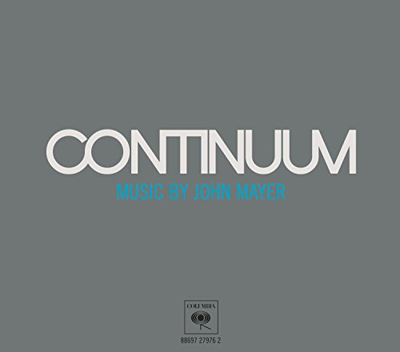
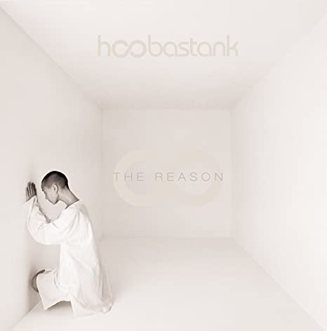

John Mayer
John Mayer, in full John Clayton Mayer, (born October 16, 1977, Bridgeport, Connecticut, U.S.), American singer, songwriter, and guitarist whose melodic, often soft rock earned him a wide audience and a number of Grammy Awards in the early 21st century.
200 tracks | 14 albums
14M Listeners
Discography
01

Gravity
John Mayer
02

Queen of California
John Mayer
03
Clarity
John Mayer
04
Slow Dancing in a Burning Room
John Mayer
05

Why Georgia
John Mayer
06
Who you love
John Mayer
07
Waiting on the world to change
John Mayer
08
Vultures
John Mayer
Similar Artists

Bruno Major

Hoobastank
The Script

Coldplay
Prateek Kuhad
Based on what you liked
Cold Mess
Alas Ka Pedh

Dwitiyo Purush

Remember

Bombay Dreams